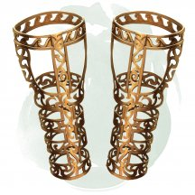
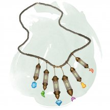
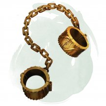
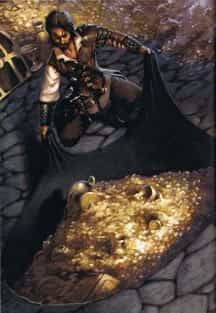
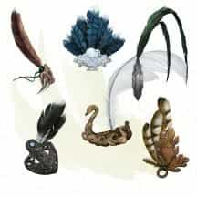
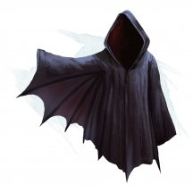
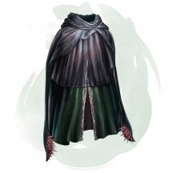

- Чудесный предмет, редкий (требуется настройка)
- Рекомендованная стоимость: 501-5 000 зм
Пока вы носите эти наручи, вы получаете бонус +2 к КД, если не носите доспех и не используете щит.
Магические предметы
Официальные материалы от Wizards of the Coast и от издательств, поддерживаемых этой компанией.
- Чудесный предмет, редкий (требуется настройка)
- Рекомендованная стоимость: 501-5 000 зм
К этим наручам привязаны тонкие кинжалы. Действием вы можете снять с наручей до двух магических кинжалов и тотчас же метнуть их, совершая дальнобойную атаку каждым кинжалом. Кинжалы исчезают, если вы сразу не метаете их, либо после того как вы промахнётесь или попадёте по цели. Кинжалы на этих наручах никогда не кончаются.
- Чудесный предмет, редкий (требуется настройка)
- Рекомендованная стоимость: 501-5 000 зм
Эта пара лёгких бронзовых наручей отделана мягким пурпурным бархатом и украшена выгравированными закрученными узорами.
Пока вы носите эти наручи, все ваши скорости увеличиваются на 10 футов, и вы совершаете с преимуществом спасброски, совершаемые для того чтобы избежать или прекратить состояние паралича или состояние опутанности на себе.
- Чудесный предмет, редкий (требуется настройка Феей или заклинателем)
- Рекомендованная стоимость: 501-5 000 зм
Действием вы совершаете несколько надрезов этими железными ножницами и заставляете тень гуманоидного существа, которое вы видите в пределах 5 футов от вас, отделиться от своего носителя. Если существо не желает отказываться от своей тени, оно может совершить спасбросок Харизмы Сл 15, сохраняя свою тень в случае успеха. Независимо от того, отсечена тень или нет, это свойство ножниц нельзя использовать снова до следующего рассвета.
Отсечённая тень [detached Shadow] привязывается к тому месту, где она была обрезана, пока вы не используете бонусное действие, чтобы заставить ее вести себя одним из следующих способов, любой из которых возможен, только если вы можете видеть тень:
- Вы контролируете движения тени и можете заставить тень перемещаться на расстояние до 30 футов по твердой или жидкой поверхности в любом выбранном вами направлении (в том числе по вертикальной поверхности), при условии, что она всё это время остаётся в поле вашего зрения. Тень безвредна, ей нельзя причинить вреда, и она невидима в темноте. Она не может говорить, и ей не требуется воздух, сон или еда.
- Вы можете отказаться от контроля над тенью, и в этот момент она становится автономной и начинает вести себя так, как пожелает Мастер. Она использует блок характеристик тени [shadow], но её тип существа—фея, а не нежить. Существо, Сила которого уменьшается до 0 из-за атаки этой тени, не умирает, а падает без сознания. Существо приходит в сознание и восстанавливает свою Силу после окончания короткого или продолжительного отдыха.
Существо, чья тень отделилась от него, проклято. Если существо без тени подвергается эффекту любого заклинания, которое оканчивает проклятие, или если хиты отсечённой от него тени уменьшаются до 0, то отсечённая тень исчезает, и существо мгновенно восстанавливает свою обычную тень.

- Чудесный предмет, редкий (требуется настройка друидом, жрецом или паладином)
- Рекомендованная стоимость: 501-5 000 зм
У этого ожерелья 1к4 + 2 магические бусины, изготовленные из аквамарина, чёрного жемчуга или топаза. На нём также много немагических бусин, изготовленных из янтаря, кровавика, цитрина, коралла, жадеита, жемчуга или кварца. Если магическую бусину снимут с ожерелья, она теряет свою магию.
Существует шесть видов магических бусин. Мастер сам решает вид каждой бусины или определяет их случайным образом. На ожерелье могут быть бусины одного и того же вида. Для того чтобы использовать одну из них, вы должны носить это ожерелье. В каждой бусине находится заклинание, которое вы можете наложить ей бонусным действием (при необходимости используйте свою Сл спасброска). После того как заклинание магической бусины наложено, эту бусину нельзя использовать повторно до следующего рассвета.
к20 Бусина... Заклинание 1-6 Благословения Благословение [Bless] 7-12 Лечения Лечение ран [cure wounds] (2-й уровень) или малое восстановление [lesser restoration] 13-16 Благоволения Высшее восстановление [greater restoration] 17-18 Кары Клеймящая кара [branding smite] 19 Призыва Планарный союзник [planar ally] 20 Хождения по ветру Хождение по ветру [Wind walk]

- Чудесный предмет, редкий
- Рекомендованная стоимость: 251-2 500 зм
На этом ожерелье висят 1к6 + 3 бусины. Вы можете действием оторвать одну бусину и метнуть её на расстояние до 60 футов. Достигнув конечной точки, бусина детонирует как заклинание огненный шар [fireball] 3-го уровня (Сл спасброска 15).
Вы можете метнуть одним действием сразу несколько бусин или даже всё ожерелье. При этом увеличьте уровень огненного шара на 1 за каждую бусину после первой.

- Чудесный предмет, редкий
- Рекомендованная стоимость: 501-5 000 зм
Вы можете действием надеть эти оковы на недееспособное существо. Они подходят для существ с размером от Маленького до Большого. Кроме того, что оковы служат как обычные наручники, они не позволяют скованному существу никакие перемещения меж измерениями, включая телепортацию и путешествия на другие планы существования. Они не мешают существу проходить сквозь межпространственные порталы.
Вы и все существа, указанные вами при надевании оков, можете действием снять их. Раз в 30 дней скованное существо может совершить проверку Силы (Атлетика) Сл 30. При успехе существо ломает и уничтожает оковы.
- Чудесный предмет, редкий (требуется настройка)
- Рекомендованная стоимость: 501-5 000 зм
Этот треугольный огненный опал имеет почти три дюйма по каждой из сторон и почти дюйм толщины. Руна Ильд (огонь) сверкает внутри камня, что делает его тёплым на ощупь. Опал обладает следующими свойствами, которые функционируют, пока он при вас.
Поджог. Действием вы можете поджечь предмет в пределах 10 футов от вас. Предмет должен быть способен гореть и огонь разгорается в области, не более 1 фута в диаметре.
Друг огня. Вы получаете сопротивление урону холодом.
Укротитель огня. Действием вы можете потушить любое открытое пламя в 10 футах от вас. Вы сами определяете, сколько огня вы хотите потушить в этом радиусе.
Дар огня. Вы можете перенести магию опала на не магический предмет, оружие или комплект доспехов нарисовав на нём руну Ильд пальцем. Перенос требует 8 часов работы, и чтобы опал и предмет находились в 5 футах друг от друга. В конце этого ритуала, опал уничтожается, а на предмете появляется серебристая руна и он получает следующие свойства:
- Оружие. Оружие теперь необычное магическое оружие. Оно наносит дополнительные 1к6 урона огнём при попадании.
- Доспехи. Доспехи теперь редкий магический предмет, требующий настройки. Вы получаете сопротивление урону холодом пока носите эти доспехи.
- Чудесный предмет, редкий
- Рекомендованная стоимость: 501-5 000 зм
Пока вы свистите в этот свисток, вы получаете скорость полёта, равную вашей двукратной скорости ходьбы. Вы можете непрерывно свистеть в течение нескольких раундов, равных 5 + ваш модификатор Телосложения, умноженный на 5 (минимум 1), эффект заканчивается когда вы начинаете говорить, задерживаете дыхание или начинаете задыхаться. Эффект также заканчивается, если вы приземлитесь. Если вы находитесь в воздухе, когда перестаёте свистеть, то вы падаете.
Свисток можно использовать три раза. Он восстанавливает израсходованные заряды ежедневно на рассвете.
- Оружие (любое), редкое
- Рекомендованная стоимость: 501-5 000 зм
Когда вы попадаете атакой по существу и наносите ему урон с помощью этого магического оружия, его хиты не могут быть восстановлены до начала вашего следующего хода.
- Чудесный предмет, редкий (требуется настройка чародеем)
- Рекомендованная стоимость: 501-5000 зм
Этот извивающийся кристалл пропитан искажённой сущностью Дальнего Предела. Действием вы можете прикрепить осколок к Крошечному предмету (например, оружию или ювелирному изделию) или отсоединить его. Он отпадает самостоятельно, если ваша настройка на него заканчивается. Вы можете использовать осколок в качестве заклинательной фокусировки, пока несёте или носите его.
Пока вы несёте или носите осколок, и когда вы используете метамагию на заклинание, вы можете заставить скользкое щупальце прорвать ткань реальности и ударить одно существо, которые вы можете видеть в пределах 30 футов. Существо должно преуспеть в спасброске Харизмы против Сл ваших заклинаний, иначе получит 3к6 урона психической энергией и станет испуганным вами до начала вашего следующего хода.
- Чудесный предмет, редкий (требуется настройка)
- Рекомендованная стоимость: 501-5 000 зм
Обсидиановый осколок длиной 1 фут с прожилками серебра и золота под его холодной поверхностью.
Усиленная магия. Пока вы держите осколок, вы можете использовать его как фокусировку для заклинаний, и он даёт вам бонус +1 к броскам атаки заклинаниями.
Увеличение силы. Пока вы носите осколок с собой, ваш показатель Силы увеличивается на 4. Осколок не может поднять ваш показатель Силы выше 22.
Проклятие. После настройки на этот предмет его проклятие распространяется на вас. Вы остаетесь проклятым до тех пор, пока на вас не будет наложено заклинания снятие проклятия [remove curse] или подобная магия, либо пока осколок не будет вновь присоединен к окаменевшему сердцу Кселуана.
Проклятие осколка приносит вам несчастья. При выпадении 1 на броске атаки, проверке характеристик или спасброске сделайте бросок по таблице "Несчастья осколка", чтобы определить несчастье. Пока длиться эффект несчастья, другие несчастья от осколка не могут настигнуть вас.
к6 Несчастья осколка 1 Вы случайно поранились осколком и становитесь отравленными до следующего рассвета. 2 Вы переживаете видение древнего бедствия - прекрасный город, над которым нависла угроза от разрушающихся гор и извергающихся вулканов, и вы становитесь ошеломленным до конца своего следующего хода. 3 Земля под вами сотрясается в течение нескольких секунд. Вы и все существа в пределах 10 футов от вас должны преуспеть в спасброске Ловкости Сл 16, иначе быть сбитыми с ног. 4 Осколок выбрасывает три светящихся волшебные стрелы, которые нацеливаются на одно случайное существо в пределах 30 футов от вас. Если такой цели нет, ею становитесь вы. Каждая стрела автоматически попадает в цель и наносит 3 (1к4 + 1) урона силовым полем. 5 До наступления следующего рассвета все звери с показателем интеллекта 3 или ниже враждебны к вам. 6 Ничего не происходит так, как вам хотелось бы. До следующего рассвета вы совершаете с помехой проверки характеристик.
- Чудесный предмет, редкий (требуется настройка чародеем)
- Рекомендованная стоимость: 501-5 000 зм
Этот тусклый холодный тяжёлый кристалл пропитан отчаянием Царства Теней. Действием вы можете прикрепить осколок к Крошечному предмету (например, оружию или ювелирному изделию) или отсоединить его. Он отпадает самостоятельно, если ваша настройка на него заканчивается. Вы можете использовать осколок в качестве заклинательной фокусировки, пока несёте или носите его.
Когда вы используете метамагию на заклинание, пока вы несёте или носите осколок, вы можете мгновенно проклясть одно существо, на которое нацелено заклинание: выберите одну характеристику, и до конца вашего следующего хода проклятое существо будет совершать все спасброски и проверки этой характеристики с помехой.
- Чудесный предмет, редкий (требуется настройка чародеем)
- Рекомендованная стоимость: 501-5 000 зм
Этот мерцающий кристалл содержит сущность Внешних Планов. Действием вы можете прикрепить осколок к Крошечному предмету (например, оружию или ювелирному изделию) или отсоединить его. Он отпадает самостоятельно, если ваша настройка на него заканчивается. Вы можете использовать осколок в качестве заклинательной фокусировки, пока несёте или носите его.
Бросьте к4 и сверьтесь с таблицей «Осколки внешней сущности», чтобы определить сущность и свойства осколка. Пока вы несёте или носите осколок, и используете метамагию на заклинание, вы можете использовать свойство осколка из таблицы.
Осколки внешней сущности
к4 Свойство 1 Законный. Вы можете окончить одно из следующих состояний, влияющих на вас или на одно существо, которое вы можете видеть в пределах 30 футов: испуг, глухота, ослепление, отравление, очарование или ошеломление. 2 Хаотичный. Выберите одно существо, которое получает урон от заклинания. Эта цель совершает все броски атаки и проверки характеристик с помехой до начала вашего следующего хода. 3 Добрый. Вы или одно существо по вашему выбору, которое вы можете видеть в пределах 30 футов, получаете 3к6 временных хитов. 4 Злой. Выберите одно существо, которое получает урон от заклинания. Это существо получает дополнительные 3к6 урона некротической энергией.
- Чудесный предмет, редкий (требуется настройка чародеем)
- Рекомендованная стоимость: 501-5 000 зм
Этот потрескивающий кристалл содержит в себе эссенцию стихийного плана. Действием вы можете прикрепить осколок к Крошечному предмету (например, оружию или ювелирному изделию) или отсоединить его. Он отпадает самостоятельно, если ваша настройка на него заканчивается. Вы можете использовать осколок в качестве заклинательной фокусировки, пока несёте или носите его.
Бросьте к4 и обратитесь к таблице «Осколки эссенции стихийных планов», чтобы определить эссенцию и свойства осколка. Пока вы несёте или носите осколок, использовав метамагию на заклинание, вы можете использовать свойство осколка из таблицы.
Осколки эссенции стихийных планов
к4 Свойство 1 Воздух. Вы можете мгновенно пролететь вплоть до 60 футов, не провоцируя атаки. 2 Земля. Вы получаете сопротивление виду урона по вашему выбору до начала вашего следующего хода. 3 Огонь. Одна из целей заклинания, которую вы можете видеть, загорается. Горящая цель получает 2к10 урона огнём в начале своего следующего хода, после чего пламя гаснет. 4 Вода. Вы создаёте волну воды, которая вырывается из вас в радиусе 10 футов. Каждое существо по вашему выбору, которое вы можете видеть в этой области, получает 2к6 урона холодом и должно преуспеть в спасброске Силы против Сл ваших заклинаний, иначе будет отброшено на 10 футов от вас и сбито с ног.
- Чудесный предмет, редкий (требуется настройка)
- Рекомендованная стоимость: 501-5 000 зм
Этот серебряный ключ-отмычка теплый на ощупь. Удерживая его в форме ключа, вы можете действием наложить с его помощью заклинание открывание [knock].
Трансформация ключа. Держа ключ, вы можете бонусным действием превратить его в волшебный длинный меч. Считается, что вы владеете мечом, и у вас есть бонус +1 к броскам атаки и урона, совершённым с его помощью. При попадании меч наносит 1к10 урона силовым полем. Предмет остается в форме меча до тех пор, пока он не покинет ваши руки, или вы не воспользуетесь бонусным действием, чтобы вернуть ему форму ключа.
Если вы прекратите настройку на предмет, пока он находится в форме меча, он автоматически вернется в свою форму ключа.
- Волшебная палочка, редкая (требуется настройка)
- Рекомендованная стоимость: 501-5 000 зм
Эта волшебная палочка имеет 2 заряда. Держа её, вы можете действием израсходовать 1 или более зарядов и выпустить из неё либо зеленый огненный шар [fireball], либо синюю молнию [lightning bolt], случайно определяя заклинание (Сл спасброска 15).
За 1 заряд вы используете заклинание 3-го уровня. Вы можете увеличить уровень заклинания на один, потратив дополнительный заряд.
Палочка ежедневно восстанавливает все заряды на рассвете. Если вы истратили последний заряд палочки, бросьте 1к20. Если выпадет «1», палочка рассыплется в пыль и уничтожится.

- Чудесный предмет, редкий
- Рекомендованная стоимость: 501-5 000 зм
Эта тонкая чёрная ткань, гладкая как шёлк, складывается до размеров носового платка. Она разворачивается в круг диаметром 6 футов.
Вы можете действием развернуть переносную дыру и поместить её на твёрдую поверхность, после чего дыра создаёт межпространственное отверстие глубиной 10 футов. Цилиндрическое пространство внутри дыры находится на другом плане, поэтому с её помощью не получится создавать сквозные проходы. Все существа, находящиеся внутри открытой переносной дыры, могут покинуть её, просто вылезая из неё.
Вы можете действием закрыть переносную дыру, взявшись за края ткани и сложив её. Складывание ткани закрывает дыру, и все существа и предметы, находящиеся в ней, остаются в межпространстве. Что бы в ней ни находилось, дыра практически ничего не весит.
Если дыра сложена, существо, находящееся в её межпространстве, может действием совершить проверку Силы Сл 10. При успехе существо вырывается наружу и появляется в пределах 5 футов от переносной дыры или существа, несущего её. Дышащее существо, находящееся в закрытой переносной дыре, может перетерпеть 10 минут, после чего начинает задыхаться.
Помещение переносной дыры в межпространство, созданное сумкой хранения [bag of holding], удобным рюкзаком Хеварда [heward’s handy haversack] или подобным предметом, мгновенно уничтожает оба предмета и открывает врата в Астральный План. Врата появляются в месте, где один предмет пытались поместить в другой. Все существа в пределах 10 футов от врат затягиваются внутрь и помещаются в случайным образом определённое место на Астральном Плане. После этого врата закрываются. Врата односторонние, и повторно не открываются.

- Чудесный предмет, редкий
- Рекомендованная стоимость: 501-5 000 зм
Этот маленький предмет выглядит как перо. Существует несколько разновидностей таких предметов, и каждый из которых обладает своим особым эффектом, используемым один раз. Мастер сам определяет разновидность пера или определяет её случайным образом.
к100 Эффект 01-15 Веер 16-40 Дерево 41-50 Кнут 51-65 Лодка-лебедь 66-80 Птица 81-00 Якорь Веер. Если вы находитесь на корабле или лодке, то можете действием подбросить веер в воздух на расстояние до 10 футов. Этот предмет исчезнет, и на том месте, где это произошло, появится гигантский машущий веер. Этот веер парит в воздухе и создаёт ветер, достаточный для того, чтобы наполнить паруса корабля, увеличивая его скорость на 5 миль в час в течение 8 часов. Вы можете действием прервать этот эффект.
Дерево. Для использования этого пера вы должны находиться на открытом воздухе. Вы можете действием коснуться свободного пространства на поверхности земли. Перо исчезает, и на том месте, где вы коснулись земли, вырастет дуб, не обладающий никакими магическими свойствами. Высотой дерево будет достигать 60 футов при диаметре ствола 5 футов и радиусе кроны 20 футов.
Кнут. Вы можете действием бросить это перо в любую точку пространства в пределах 10 футов от себя. Перо исчезает, и на его месте появится парящий над землёй кнут. После этого вы можете бонусным действием совершить рукопашную атаку заклинанием по существу, находящемуся в пределах 10 футов от кнута, с бонусом атаки +9. При попадании цель получает урон силовым полем 1к6 + 5.
В свой ход вы можете бонусным действием приказать кнуту переместиться на 20 футов и повторить атаку по существу, находящемуся в пределах 10 футов от него. Кнут исчезает через 1 час, либо после того, как вы действием отпустите его, либо же если вы станете недееспособным или умрёте.
Лодка-лебедь. Вы можете действием прикоснуться этим предметом к водоёму с диаметром как минимум 60 футов. Перо исчезнет, и вместо него появляется лодка в форме лебедя длиной 50 и шириной 20 футов. Эта лодка может самостоятельно двигаться по водной глади со скоростью 6 миль в час. Находясь на лодке, вы можете действием отдавать ей команды двигаться или совершить поворот на 90 градусов. Лодка может перевозить 32 существа Среднего или меньшего размера. Большое существо считается за четыре Средних, а Огромное за девять. Лодка остаётся в вашем распоряжении 24 часа, после чего исчезает. Вы также можете действием прервать действие магии досрочно.
Птица. Вы можете действием подбросить перо в воздух на 5 футов. Перо исчезает, и на его месте появляется огромная, разноцветная птица. Используйте для неё блок статистики рух [roc], но она исполняет ваши простые приказания и не может атаковать. Она может переносить до 500 фунтов, летя со своей максимальной скоростью (16 миль в час при максимуме в 144 мили в день, с часовыми отдыхами через каждые 3 часа), или 1000 фунтов с уменьшенной вдвое скоростью. Птица исчезнет после того, как пролетит свою максимальную дневную дистанцию или, если её хиты опустятся до 0. Вы также можете отпустить её действием.
Якорь. Вы можете действием коснуться этим пером лодки или корабля. В течение следующих 24 часов это судно не может двинуться с места, какие бы средства не использовались для этого. Повторное прикосновение прекращает эффект. Когда эффект заканчивается, перо исчезает.
- Чудесный предмет, редкий (требуется настройка)
- Рекомендованная стоимость: 501-5 000 зм
Этот предмет изготовлен из пера диатримы – большой, пёстрой бескрылой птицы, родом из Подземья. Если вы действием произнесёте командное слово и бросите перо на землю в Большом по размеру свободном пространстве в пределах 5 футов от вас, то из пера на 6 часов появится живая диатрима [diatryma]. По истечению этого времени, она вновь обращается в свою форму пера. Также она обращается в перо, если её хиты опустятся до 0, либо если вы действием снова произнесёте командное слово, прикоснувшись к птице.
Как только диатрима обращается в перо, магию пера невозможно применить повторно, пока не истечет 7 дней.
Существо дружелюбно к вам и вашим союзникам, и она используется как скакун. Птица понимает языки на которых вы говорите и подчиняется вашим приказам. Если вы ничего не прикажите ей, то диатрима защищает себя, но не предпринимает дальнейших действий.
- Чудесный предмет, редкий (требуется настройка)
- Рекомендованная стоимость: 501-5 000 зм
Пока на вас надеты обе эти стальные перчатки, любое немагическое оружие, которое вы держите в одной перчатке, считается магическим оружием. Бонусным действием вы можете использовать перчатки, чтобы заставить магическое пламя окутать одно или два рукопашных оружия в ваших руках. Каждое пылающее оружие дополнительно наносит 1к6 урона огнём при попадании. Пламя горит до тех пор, пока вы не уберёте или не выпустите оружие. Как только вы используете это свойство, оно не может быть использовано повторно до следующего рассвета.
- Чудесный предмет, редкий (требуется настройка)
- Рекомендованная стоимость: 501-5 000 зм
Это эльфийский плащ [cloak of elvenkind]. Он также даёт сопротивление урону огнём, пока вы его носите. Он теряет свои магические свойства если в течение 1 часа непрерывно находится на солнечном свете.
- Чудесный предмет, редкий (требуется настройка)
- Рекомендованная стоимость: 501-5 000 зм
Этот темный плащ сделан из выделанной шкуры адской гончей. Действием вы можете приказать плащу превратить вас в адскую гончую [hell hound] на срок до 1 часа. Данная трансформация функционирует как заклинание превращение [polymorph], но вы можете использовать Бонусное действие, чтобы вернуться к своей нормальной форме.
Проклятие. Этот плащ проклят сущностью адской гончей, и если вы настроитесь на него, проклятие распространится и на вас. Пока проклятие не будет снято при помощи заклинания снятие проклятия [remove curse] или подобной магии, вы не хотите расставаться с плащом, постоянно держа его в пределах видимости.
Когда вы в шестой раз используете плащ и каждый раз после, вы должны совершать спасбросок Харизмы Сл 15. При провале трансформация длится до тех пор, пока не будет рассеяна или пока ваши хиты не опустятся до 0, и вы не можете добровольно вернуться к нормальной форме.
Если вы когда-нибудь останетесь в форме адской гончей на протяжении 6 часов, трансформация станет постоянной, и вы потеряете себя. Все ваши характеристики заменяются характеристиками адской гончей. После этого только снятие проклятия [remove curse] или подобная магии позволяет вам вернуть свою личность и вернуться к нормальной жизни. Если вы остаетесь в этой постоянной форме в течение 6 дней, только заклинание исполнение желаний [wish] может обратить трансформацию вспять.

- Чудесный предмет, редкий (требуется настройка)
- Рекомендованная стоимость: 501-5 000 зм
Пока вы носите этот плащ, вы совершаете с преимуществом проверки Ловкости (Скрытность). В области тусклого освещения или темноте вы можете схватить края плаща обеими руками и использовать его для полёта со скоростью 40 футов. Если вы отпустите плащ во время полёта или перестанете находиться в области тусклого света или тьмы, вы теряете эту скорость полёта.
Если вы носите этот плащ, и находитесь в области тусклого освещения или темноте, вы можете действием наложить на себя превращение [polymorph] и стать летучей мышью. Пока вы находитесь в облике летучей мыши, вы сохраняете свои значения Интеллекта, Мудрости и Харизмы. Это свойство плаща нельзя использовать повторно до следующего рассвета.

- Чудесный предмет, редкий (требуется настройка)
- Рекомендованная стоимость: 501-5 000 зм
Пока вы носите этот плащ, он создаёт иллюзию, что вы находитесь немного в стороне от настоящего местонахождения, отчего существа совершают броски атаки по вам с помехой. Если вы получаете урон, это свойство перестаёт действовать до начала вашего следующего хода. Это свойство подавляется, пока вы недееспособны, опутаны или не можете перемещаться по другой причине.